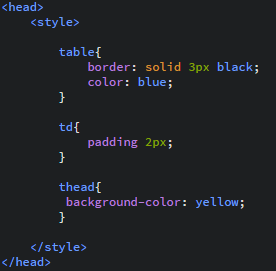

WARSZTATY WEBOWE Mikołaj Szumigalski
Powrót
Zajęcia 3
Link do pobrania prezentacji z zajęć nr 3: Prezentacja 2
1.Wstęp do HTML
Skrót html oznacza Hypertext Markup Language, czyli hipertekstowy język znaczników:
- hipertekstowy - tekst podzielony na niezależne części połączone hiperłączami (czyli nie mamy jednej strony tylko nasza strona jest podzielona na mniejsze podstrony począczone linkami (hiperłączami))
-język znaczników - teksty dzielimy, stylujemy itd. za pomocą znaczników - poleceń zmkniętych w nawiasy <>.
1.1 Znacznik
2.Szkielet dokumentu HTML
Znaczniki html, doctype html określają nam typ dokumentu jako html'owy. Jak widzimy szkielet składa się z głowy(head) i ciała(body).
2.1 Head (Głowa)
Ćwiczenie 1
Co może (powinno) się znaleźć w tej sekcji?
-
-
-
*Znacznik meta
2.2 Ciało (Body)
W ciele znajduje się główna treść strony. Możemy ją przedstawić na różne sposoby. Może to być zwykły akapit z nagłówkiem, może to być tabela, obrazek, czy film. Znajdują się też linki do innych stron, czy linki do plików np. do pobrania.
Na przykładzie widzimy kilka znaczników związanych ze szkieletem strony:
Jednak te znaczniki są znacznikami bardziej grupującymi, same w sobie nie powodują zmiany treści tekstu. To tego, aby tekst rzeczywiście zachowywał się w taki sposób należy użyć stylowania tych znaczników.
Są również przydatne znaczniki, które same w sobie zmieniają wygląd treści. Są to m. in.
2.3 Stopka (Footer)
W stopce znajdują się te elementy, które nie są główną treścią strony, ale też może zawierać ważne informacje np o autorze strony. Stopka znajduje się wewnątrz ciała!
Ćwiczenie 2
Co jeszcze może (powinno) się znaleźć w tej sekcji?
-
-
-
3.Tabele
Tabele tworzymy znacznikiem table. Wiersz (row) tworzymy za pomocą znacznika tr, a komórkę tabeli (data) za pomocą td . Wyjątek stanowią komórki nagłówka tabeli, które robimy za pomocą znacznika th.
Co ciekawe, tabela również może składać się z głowy, ciała i stopki. Służą do tego kolejno znaczniki thead , tbody i tfoot . Co więcej nie musimy podawać tych elementów po kolei, aby wyświetlały się w odpowiedniej kolejności, co pokazuje ten przykład
3.1 Łączenie komórek tabeli
Komórki w poziomie łączymy za pomocą atrybutu colspan="x" (column span) gdzie x to ilość komórek, które łączymy w jedną. Analogicznie komórki w pionie łączymy za pomocą atrybutu rowspan="x" . Należy pamiętać że ten atrybut przypisujemy znacznikowi td ( lub th ), a nie np. table , ponieważ odnosi się tylko do tej konkretnej komórki.
Pytanie: A co jeśli użyjemy colspan ="2" i rowspan="2" jednocześnie? Wtedy będziemy mieć komórkę wielkości trzech czy czterech komórek? A może nie wolno łączyć i wybuchnie?
3.2 Stylowanie tabeli
Znacznik style
Aby stylować tabelę i jej elementy wyprzedzimy trochę temat stylowania. Stylowanie będzie się odbywać wewnątrz znacznika head w którym musimy umieścić inny: style . Wewnątrz znacznika style postępujemy wg takiego schematu:

Jak widać najpierw podajemy nazwę znacznika, a potem w nawiasach klamrowych wypisujemy jego atrybuty i po dwukropku wartości atrybutów. Stylować możemy wszystkie znaczniki, nie tylko te z przykładu. Tu widać też kolejną zaletę thead , ponieważ pozwala ona np. pokolorować sam nagłowek na jeden kolor, lub obramować go.
Kliknij, aby obejrzeć tabelę stylowania
Ćwiczenie: spróbuj odtworzyć podane poniżej tabele
4. Listy
W zależności czy chcemy listę numerowaną (ordered list), czy nienumerowaną (unordered list) używamy odpowiednio znaczników ol i ul . Wewnątrz listy jej elementy powinny znajdować się w znaczniku li (list index). Na przykładzie wygląda to następująco:
4.1 Listy nienumerowane
Elementy listy nienumerowanej wcale nie muszą się zaczynać kropką. Możymy nadać atrybut list-style-type: znacznikowi ul . Możliwe wartości tego atrybutu:
disc kułeczka zamalowane
circle kułeczka niezamalowane
square kwadraciki
none nic
4.2 Listy numerowane
Elementy listy numerowanej również nie muszą być oznaczane cyframi. Możymy nadać atrybut type: znacznikowi ol . Możliwe wartości tego atrybutu:
"1" cyferki
"A" wielkie litery alfabetu łacińskiego
"a" małe litery alfabetu łacińskiego
"I" wielkie cyfry rzymskie
"i" małe cyfry rzymskie
Praca domowa
Tworzymy dokument html, który posiada:
-nagłówek, ciało i stopkę (w nagłówku tytuł strony i kodowanie UTF-8)
-listę numerowaną, a w niej zagnieżdżoną listę nienumerowaną
-tabelę, która posiada obramowanie, kolorowy nagłówek, ciało i stopkę
-nagłówek, 3 akapity dowolnego tekstu i stopkę z informacją o autorze strony
-elementy powinny być skomentowane
Gotowy dokument proszę umieścić w repozytorium Github do końca tej soboty